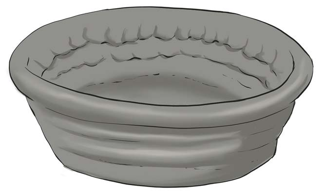
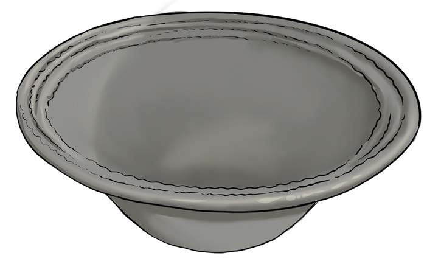

(j) Sawazisha mdomo wa kifani mara kitakapokamilika, kama inavyoonekana katika Kielelezo namba 12;

(k) Kadiria kimo cha kifani kiwe cha wastani unaofaa ili kuzuia kubomoka kwa sababu ya ubichi wa udongo na uzito wa sehemu ya juu. Ili kuepuka hali hiyo, acha kifani wazi kwa muda mfupi ili kikauke kidogo kisha endelea kukikamilisha, kama inavyoonekana katika Kielelezo namba 13;